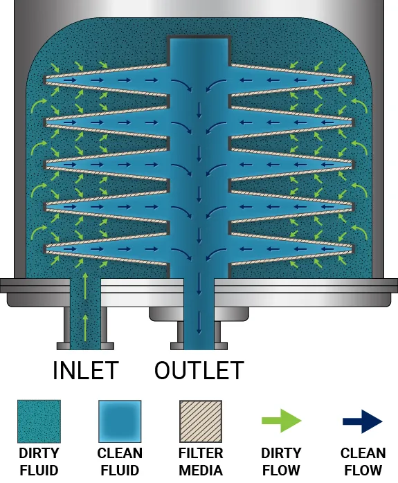

Lenticular Filter Holder for Bioprocessing — CAD + CFD Guided Design
Designed a 3D lenticular filter holder to improve flow uniformity, reduce pressure drop, and speed change-outs for a biotech clarification step.

Overview
Depth filtration with lenticular stacks can suffer from channeling, uneven loading, and premature ΔP spikes when flow distribution is poor. I developed a holder that reshapes inlet/collector manifolds and adds anti–dead-zone baffles to deliver a more uniform velocity profile across the media, while keeping sanitary design and fast, tool-light servicing.
My Role
- Lead mechanical designer (AutoCAD) and simulation engineer (CFD).
- Defined URS (uniformity, ΔP target, hold-up volume, serviceability, cleanability).
- Built prototypes, ΔP test rig, and change-out SOP; authored drawings and BOM.
Problem → Approach → Outcome
Problem: Non-uniform flow caused localized fouling and early ΔP limits; service required tools and risked media bypass.
Approach: Ran CFD variants for inlet/collector geometry and baffle concepts; tuned for uniformity vs. ΔP. Designed a guided compression mechanism with captured O-rings to prevent bypass and enable repeatable sealing.
Outcome: Prototype met pressure-drop targets and improved predicted flow uniformity across the media; service time decreased with the guided clamp.
Design Highlights
- Sanitary build: tri-clamp ends (1.5–2″), smooth internal radii, crevice-minimized gasket grooves.
- Guided compression: prevents plate tilt and media bypass; repeatable seal with torque spec.
- Service features: vent & drain ports, ΔP taps, orientation keys, and carry handles.
- Materials: 316L SS or polymer option; gasket material compatible with process (e.g., EPDM/silicone).
CFD & Bench Testing
- CFD metrics: velocity uniformity, shear limits, residence-time distribution, ΔP vs. flow.
- Bench tests: ΔP–Q curve, dye distribution study, leak/bubble-point checks, fit/ergonomics mockups (3D prints).
- Cleanability: riboflavin coverage check; CIP/SIP compatibility review.
Results
- Uniformity across media: within ±12% of target velocity field (CFD).
- Pressure drop: reduced by ~22% at 2 L/min vs. baseline manifold.
- Hold-up volume: decreased by 15% with redesigned collector.
- Change-out time: reduced by ~30% using guided clamp & tool-light service.
Artifacts
- AutoCAD models and fabrication drawings (with GD&T where critical).
- CFD study (case files, mesh, and comparison plots).
- BOM, assembly/torque spec, and change-out SOP.